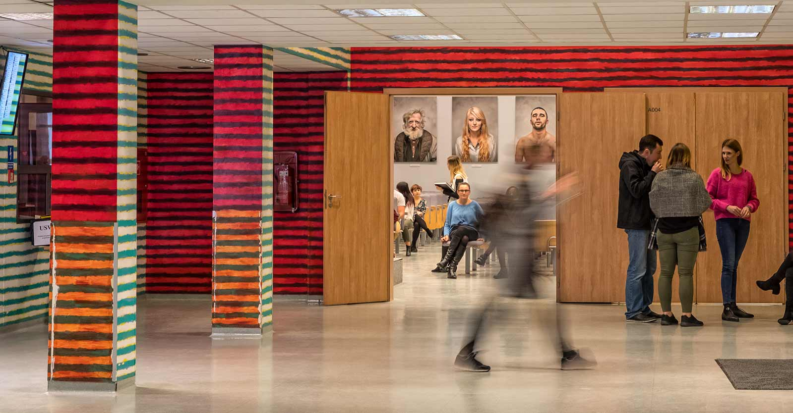

I stopnia
II stopnia
Podyplomowe
Szkolenia
Usługi

Będziesz się uczyć z ciekawością.
Obiecujemy.
zobacz więcej
umów się z aniołem
Obiecujemy się uczyć z ciekawością.
umów się z aniołem
zobacz więcej
←
→